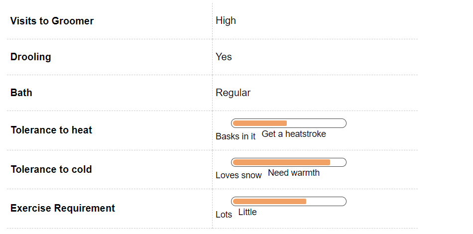
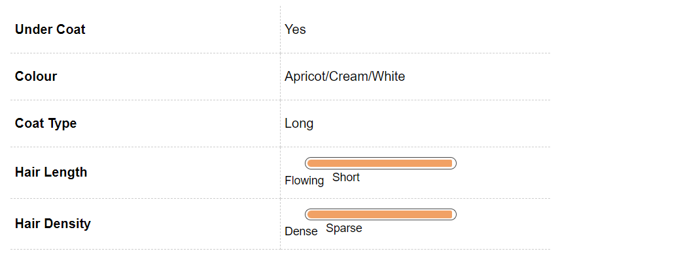

Pekingese Dog Breed Information
Introduction
Legend has it that the Pekingese is the product of a lion that fell in love with a monkey. Considering they’re known for their boldness, independence and courage, this isn’t hard to believe! They even survived the sinking of the Titanic. Living with a Pekingese is aking to living with royalty. There was a time when the common man had to bow down in the presence of a Pekingese and pay for stealing or harming one with his or her life. Their regal demeanour continues to survive; Pekingese greet everyone they meet with dignity. Having been bred to serve as companion dogs for the Chinese royalty, Pekes are happiest when in your arms or at least at arm’s length from you. Affectionate and cuddly, this breed is the quintessential lap dog.
History
Pekingese were known to exist as far back as the 8th century, where they were bred to be companion and guard dogs to the royal families of the Tang Dynasty. Chinese emperors used them to act as guards, with two dogs “manning” the entrance to bark to announce the arrival of their master, and two dogs holding the ends of the royal robe in their mouths. Pekes were closely guarded and never allowed outside the palace, let alone the country. Legend has it that, in the Opium War of 1860, when the British took over the Chinese imperial palace, they found five Pekes guarding the body if their queen who committed suicide so that she wouldn’t have to surrender. The soldiers took the Pekes as symbols of victory and presented two of them to the Duchess of Wellington, two to the Duke and Duchess of Richmond and Gordon, and one to Queen Victoria herself. This is how their popularity is said to have spread to the Western world, where they continue to be celebrated as much-loved companion dogs and cuddly canine family members.
Unique Aspects
Pekes are known to make great one-person dogs, though they do very well with families, too. They can be really affectionate towards family and quite aloof towards strangers, but most of all, they are known for their lack of patience towards young children. Pekes like to be the child in the family, so if you have or are planning on having babies, make sure your Peke is socialised with the child from an early age. Pekingese are brachycephalic dogs. Their short, flat noses keep them preoccupied with a host of respiratory problems through most of their lives. The nose also means they don’t do well in very warm places, as breathing gets more laboured. Finally, Pekes like to think that their nobility is not a thing of the past. They have an endearing strut. Moreover, their small bow legs make them the perfect apartment dog. They don’t need much exercise.
Fun Trivia

Celebrity Pekingese owners
Celebrity Pekingese owners Shirley Temple and Elizabeth Taylor both owned Pekes, perhaps a sign that royalty does indeed want to share space with more royalty!
Vital Stats:
Dog Breed Group:
Toy Dogs
Height:
6-9 Inches
Weight:
3-6 Kg
Life Span:
9 to 10 years
Pros and Cons
| Pros |
Cons |
|
Perfect companions for families with elderly members |
One of the most difficult breeds to train |
|
Incredibly good looking |
Not good with children; can snap or bite |
|
Do not require much exercise |
Grooming requires a lot of time and energy
|
Pekingese Maintenance & Effort

Grooming
For a dog as tiny as the Peke, grooming is a gargantuan task. They will need daily brushing to keep them free of tangles and mats. That said, like most long-coated dogs, they are only average shedders. Females shed the undercoat when they come into heat. The Pekingese has a long and coarse top coat, with a dense and furry undercoat. It is advisable to just wet the coat a little before you brush it as this will reduce breakage to a great extent. Ideally, brush the hair all the way down to the skin, as this will help get rid of dead cells and dander from the coat as well. In addition to the coat, the wrinkles around the face, especially the region around the eyes have to be cleaned everyday to keep infections at bay. You can do this with a damp cotton ball or an alcohol-free wipe. Make sure that all dampness is removed after grooming, to ensure that infections are minimised. It is advisable to keep a short coat on your Peke, if you’re not the sort of person who can dedicated time on an almost-daily basis to groom your dog.
Pekingese Hair & Coat

Pekingese Health & Care
Common Health Issues
If you’re planning on spending your life with a Peke, prepare to plan on spending. Pekes have delicate physiology and will most likely require several visits to the vet. One of the most common issues that Pekes have is Patellar Luxation, a condition in which the kneecap is dislocated, in such a way that the leg can move in both directions. This can be treated through medication, though severe forms may require surgery. The brachycephalic face gives rise to various respiratory issues. This is a common problem in dogs with shortened or flat faces. Conditions such as soft palate and narrowed nostrils are common. Most issues can be maintained with medication, though some will require surgery. Pekes also develop cataracts and other eye problems quite commonly.
Pekingese Behavior
Temperament
Pekes are known for their bravery and an unshakeable independent streak. They are also very stubborn dogs, which make them amongst the hardest breeds to train, especially with recall. Pekes are famous for pretending not to hear when you call them, and unless trained from puppyhood, will most likely not come to you when called. They make wonderful companions and are very affectionate towards their family, but this may not be the best choice if you have small children around. Pekes want to be the child in the house and other children tend to annoy them. They’re known to snap at kids and see them as competitors for their human parents’ attention. They are known to be great one-man dogs, so if you prefer the quiet life and live alone, a Peke would be the best dog for you. While they are immensely affectionate lap dogs, they can be suspicious, wary and plain aloof around strangers. The suffer from Small-dog Syndrome and often like to act larger than they are, taking on adversaries – whether real or imaginary – several times their size. If you expect your Peke to live with other animals, socialisation from a young age is a must.
Environment
Pekes are perfect apartment dogs, since they don’t require much space and can be accommodated anywhere with ease. Their short bow legs also ensure that they don’t need too much exercise. However, they have strong, independent minds and, failing regular exercise and innovative methods to keep their brains occupied, they are known to get a little destructive. The Peke’s flat face makes it very susceptible to heat stroke. This happens because the air which goes into the lungs is not cooled as fast as in dogs with longer muzzles. It is advisable to keep Pekes indoors, preferably in air-conditioned rooms, during hot weather. Peke are not good with small children around and their threshold for tolerance is very low. They suit families with older children or adults. They are good with other pets, though, especially if socialised early.
Training & Intelligence
The Pekingese is doubtless an intelligent breed, but they have a stubborn streak that can come in the way of training. Start at an early age and remember to socialise them with both youngsters and adults, if they will later be expected to tolerate a toddler or two. Fortunately, Pekes are foodies, and the way to a Peke’s heart is through his or her stomach. They’re likely to learn much better with positive reinforcement methods and promises of treats for every lesson learnt. At least until you’re absolutely certain of your Peke’s behaviour and personality, minimise unsupervised play with very young children and other animals. Pekes don’t know that they’re tiny dogs and often don’t pick fights with people and animals their own size. They’re also prone to barking, so make both bark and bite inhibition an integral part of your training.
Pekingese Breeding
Procreation
Pekingese are not an easy breed when it comes to breeding. There can be a lot of complications involved in their mating, the most common being a fairly high rate of C-section amongst them. An average Peke litter consists of two to four puppies. An average male and female Pekingese will attain sexual maturity anywhere between six to nine months of age, although he or she will still be too young to breed. An ideal age to cross your Peke is after he or she is two years old. most of the cases you will need the help of your veterinarian to breed the Peke, as there can be complications.
Puppies
Peke puppies look like cuddly little toys, but unlike several breeds, the puppies may not take well to constant cuddling. Give them space and let them decide when they want affection. While it’s hard to match their cuteness quotient, Pekes are hard to train at any age and housebreaking a litterful of them can be quite a task.
Pekingese Appearance

Body
Pekes were carried in the wide sleeves of Chinese courtiers to keep them warm. In spite of their tiny bodies, they are known for their independence and fearlessness, often referred to as “the large dog in a small body”. They are loyal and exceptionally stubborn. The body of the Pekingese is short but is well built in the front with a broad chest and well sprung ribs along with a straight back. The legs are short, the hind legs are light-boned and the upper forelegs are bow-shaped. The feet are flat and large with front toes that are inverted. They are between 24 and 26 inches tall and weigh between 7 and 14 pounds (3-5kg). Pekes have an unmistakable large, broad, flat head and are brachycephalic or flat-faced. The nose is very snub, broad and black. The eyes are prominent, dark and round and are set wide apart. The stop is well pronounced and they have a wide and wrinkled muzzle. The ears are heart shaped, profusely feathered and drooping but not very long. The tail is set high and curled over the back to either side.